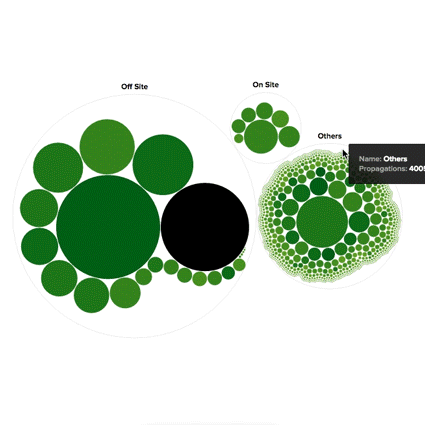

Refine the visualization


POUND
Visualize how content spread on the web
Powered by BuzzFeed’s proprietary tracking technology, Pound dashboard helps our clients and advertisers to gain insights about the virality of their sponsored content across the social web. The visualization maps a network of how one person shares content to another on social networks like Facebook & Twitter, as well as one-to-one sharing platforms like email & text.
For each piece of content, the sharing pattern can inform the Reach of the content (size of the circle), and the engagement the content resonates within the audience group (darkness of the circle).
Explore
Look through existing examples, I started by exploring ways to visualize the sharing network and drilling-down interaction. Collaborating with a super rad engineer to build a prototype with sample data, we quickly identify which visualization is the easiest to understand, and most feasible for rendering a dynamic dataset.
Refine the visualization
Dashboard
To operationalized this data for boarder usage for business team, we build out a dashboard where advertiser can visualize the reach and engagement of their contents on the web.
Training
Along with product managers, we put together an onboarding guide for our the Sale team and Client Services team to understand the metrics and learn how they can use the insights to clients.
What I learned
Role: Product Design. With a team of 2 product managers, 1 project manager, 1 data scientist, and 4 engineers.